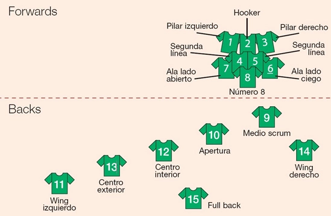

El rugby tiene distintas reglas las cuales veremos en otro apartado, reglas por el momento me gustaria hablar sobre sus distintas modalidades mas populares
en el mundo
La versión de este deporte más conocida es la del rugby jugado por equipos de quince
jugadores, aunque no es la única.
Por cada equipo juegan un total de 15 jugadores divididos en dos grupos: forwards o
delanteros y backs o tres cuartos.Los jugadores del 1 al 8 (forwards) forman el pack, la "delantera" o "paquete" para
realizar el scrum (la melé):
Primera línea: los jugadores que intentan llevar la pelota a su lado y que están en el
choque; su función en los scrums es mantener el scrum estable.

-
2 - Hooker o talonador
-
3- Prop - Pilar derecho.
Segunda línea: generalmente los jugadores más altos del equipo y que se hacen cargo de
empujar en los scrums, también encargados de ganar la pelota en los saques desde el
lateral. (touche, line-out)
-
4 - 2nd row - Segunda línea o lock
-
5 - 2nd row - Segunda línea o lock
Tercera línea: los jugadores que mantienen la formación equilibrada para que no se
desarme cometiendo una falta.
-
6 - Flanker - Ala o flanker
-
7 - Flanker - Ala o flanker
-
8 - Number 8 - Octavo, tercera centro o número 8
-
9 - Scrum-half - Medio scrum o medio melé: es el encargado de dirigir a los
delanteros y enlazar con la línea de tres cuartos.
-
10 - Fly-half - Apertura o medio apertura
-
11 - Left wing - Wing o ala izquierdo
-
12 - Inside center - Primer centro o primer inside
-
13 - Outside center - Segundo centro o segundo inside
-
14 - Right wing - Wing o ala derecho
-
15 - Full back - Zaguero